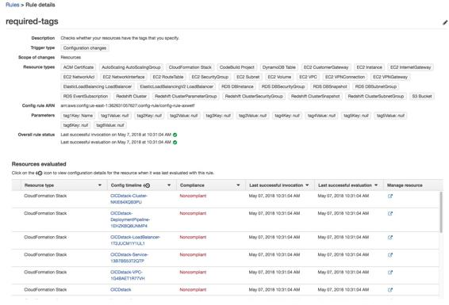
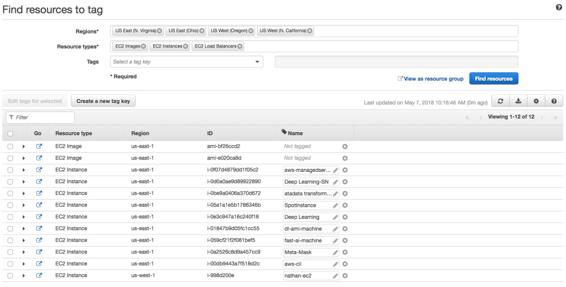

Tagging best practices
For large enterprises or small startups alike, tagging is the most critical daily activity to be performed in order to enable cost transparency. CSPs can report and display billing transparently, but those charges will mean little to the business or end users if they can't allocate or track costs to key business functions.
Tagging is a native function supported by all leading CSPs and supports customization. Since each business, organization, and consumer has unique internal processes and terminology, it is important to develop a tagging strategy that works for you.
Cloud Native Architecture Best Practice: Tagging will very quickly become burdensome and impossible to maintain if tags are not designated at launch time. Within a couple of weeks, the entire environment can be untagged (and thus impossible to manage) if development life cycles are short enough. A cloud native cost optimized environment automatically detects (and even deletes) resources that aren't tagged. This very quickly forces teams to treat tagging as a critical activity.
Automatic enforcement of tags can be done in a number of ways. Using the command-line interface, a list of untagged resources can be generated for each service (for example, AWS EC2, EBS, and so on). Native CSP tools such as AWS Tag Editor can be used to manually find untagged resources. The optimal cloud native route would be to build a rule requiring tags on native cloud services that do this automatically, such as AWS Config Rules. Config Rules checks the environment constantly for tags that you specify as required. If they are not, manually or automatic intervention can be performed once detected:

The previous screenshot shows how AWS Config Rules allow automatic detection and reporting of resources that are not tagged.
The following screenshot shows how AWS Tag Editor can be used to manually search for resources without tags, though this is more cumbersome than automatic detection (especially in large enterprise environments where thousands of resources are being used and consumed):

AWS Tag Editor
In a fully mature environment, every deployment is managed as code using deployment pipelines. In this pipeline, a gate should be used to enforce proper tagging of the template. Upon deployment, the tags should flow down to all resources in the template, if written properly. The key to tagging is automation, and by designating tags at the top-level construct (a stack template), we are minimizing the manual intervention needed and increasing the accuracy of our tags.